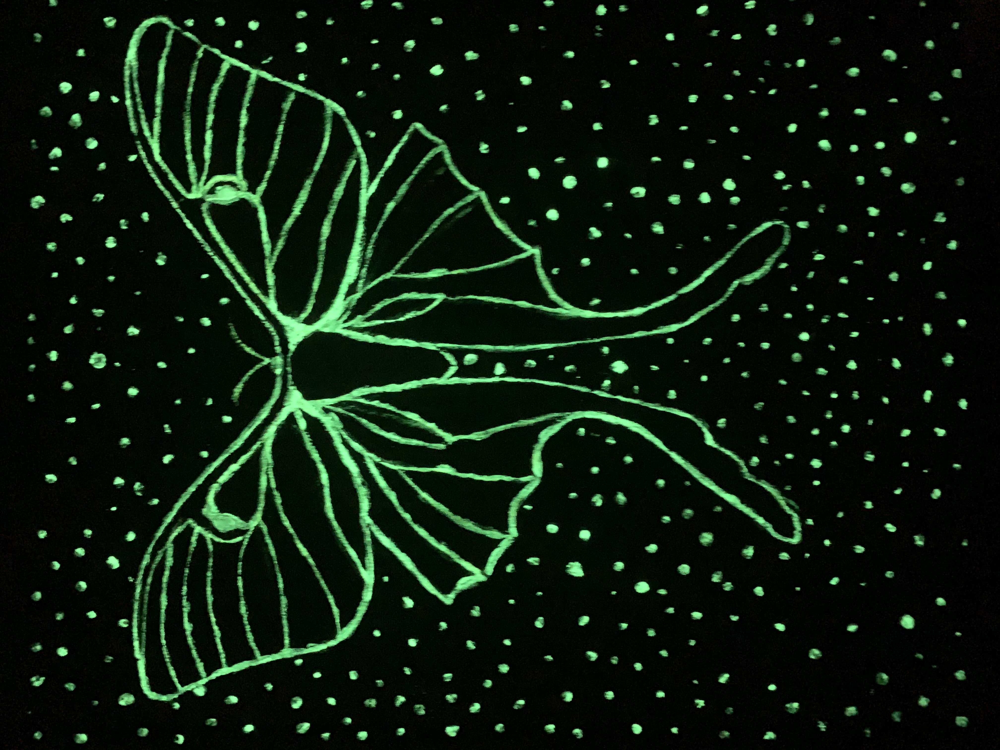

Visual Art
Stuck In The Middle

Pen on isometric graph paper, 2021. Insired by the struggle of finding balance during my first year of college. Published in HighGrade Journal of the Arts.
The Most Beautiful Thoughts are Always Beside The Darkest

Acrylic on canvas board, with glow in the dark paint, 2020. Published in HighGrade Journal of the Arts.